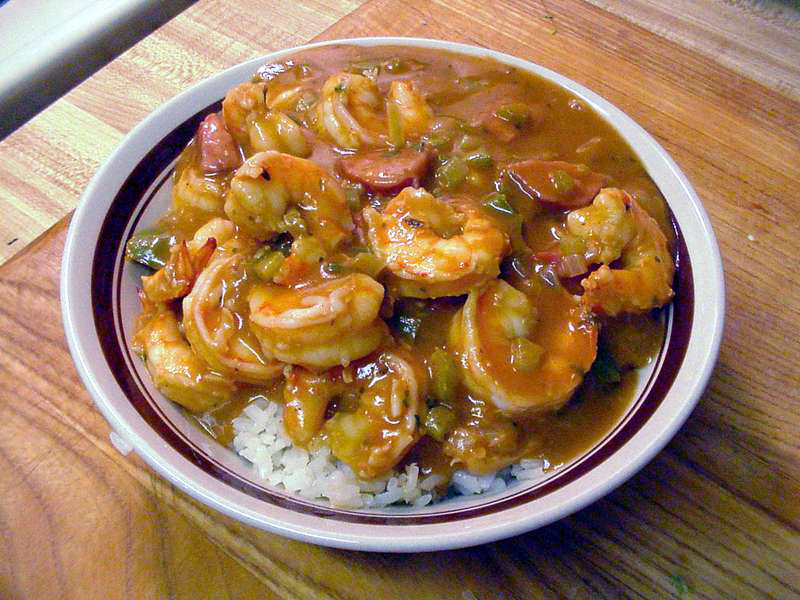
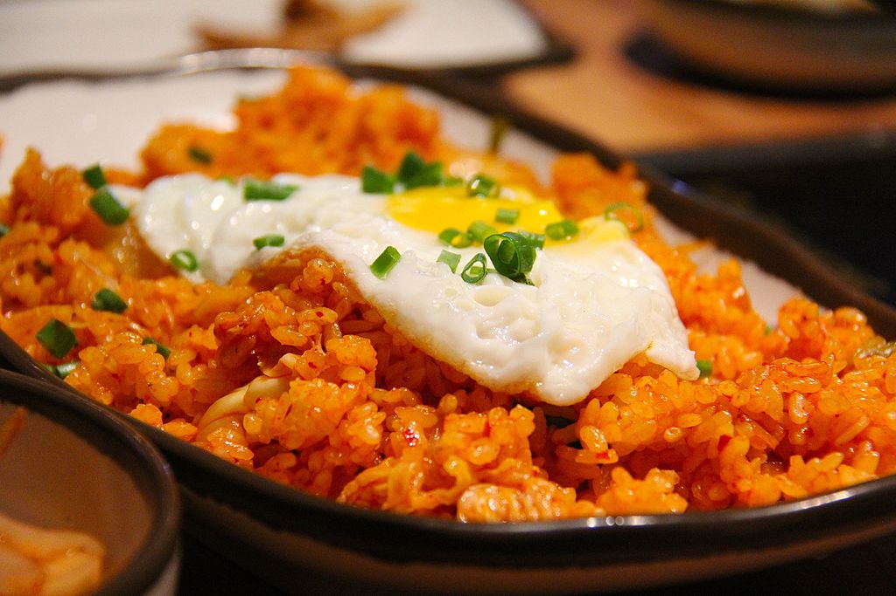

Garlic Soup (Sopa de ajo)
Being from Spain, one would imagine that I would choose paella as one of my favorite dishes, but I am partial to sopa de ajo, which translates as garlic soup. This hearty stew is typical from the interior of the country, where the long cold winters always welcome comfort dishes. Ingredients for garlic soup include olive oil, garlic, smoked paprika, day-old bread, broth, eggs, salt and, optionally, some serrano ham and/or chorizo.
Gumbo
I first came to know about gumbo during a trip to New Orleans a few years ago. Not only I fell in love with the city, I did it also with this creamy stew influenced by a lot of cuisines: French, Spanish, Cajun, Creole, etc. The photo shows a shrimp gumbo, but my favorite version is the one made with chicken and the spicy andouille sausage.
Kimchi Fried Rice
Kimchi fried rice is a staple of Korean and Korean-American cuisine. It is made with (preferably) day-old rice, garlic, ginger, whatever left-over meats and vegetable you have around and, most importantly, kimchi, a spicy fermented cabagge typical of Korea. I first ate the place in a small restaurant in Iowa City, where I went to graduate school, and it has become a favourite of mine ever since.
